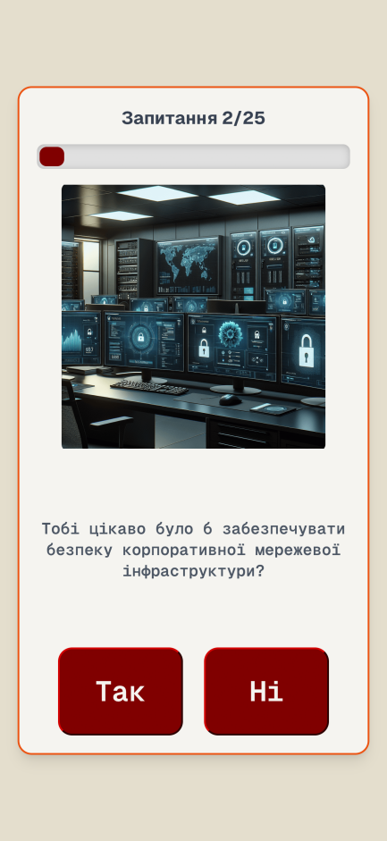
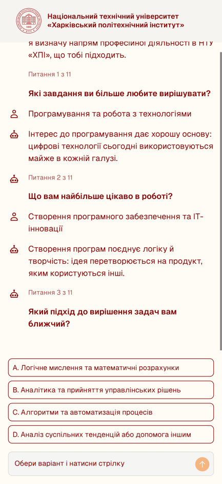
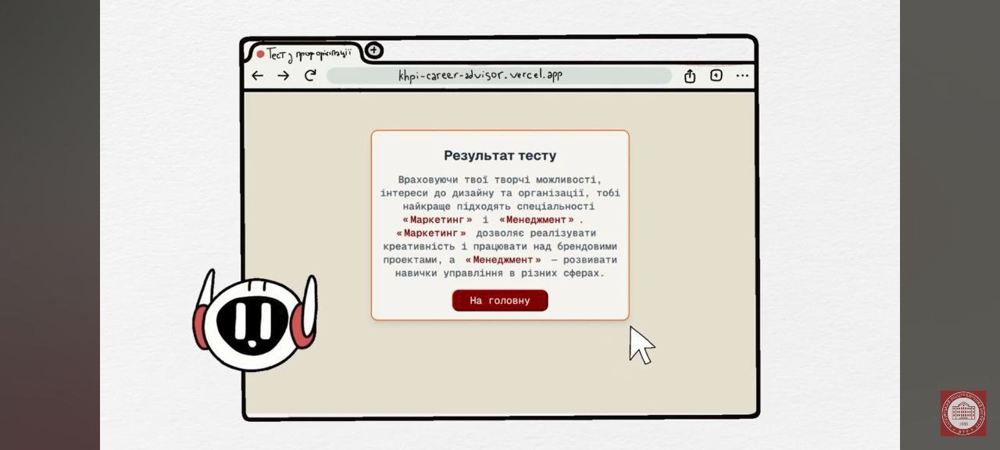
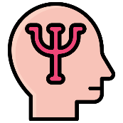
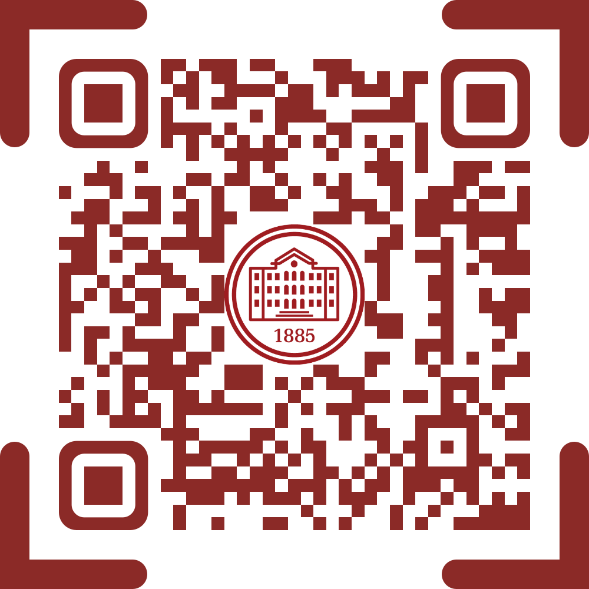
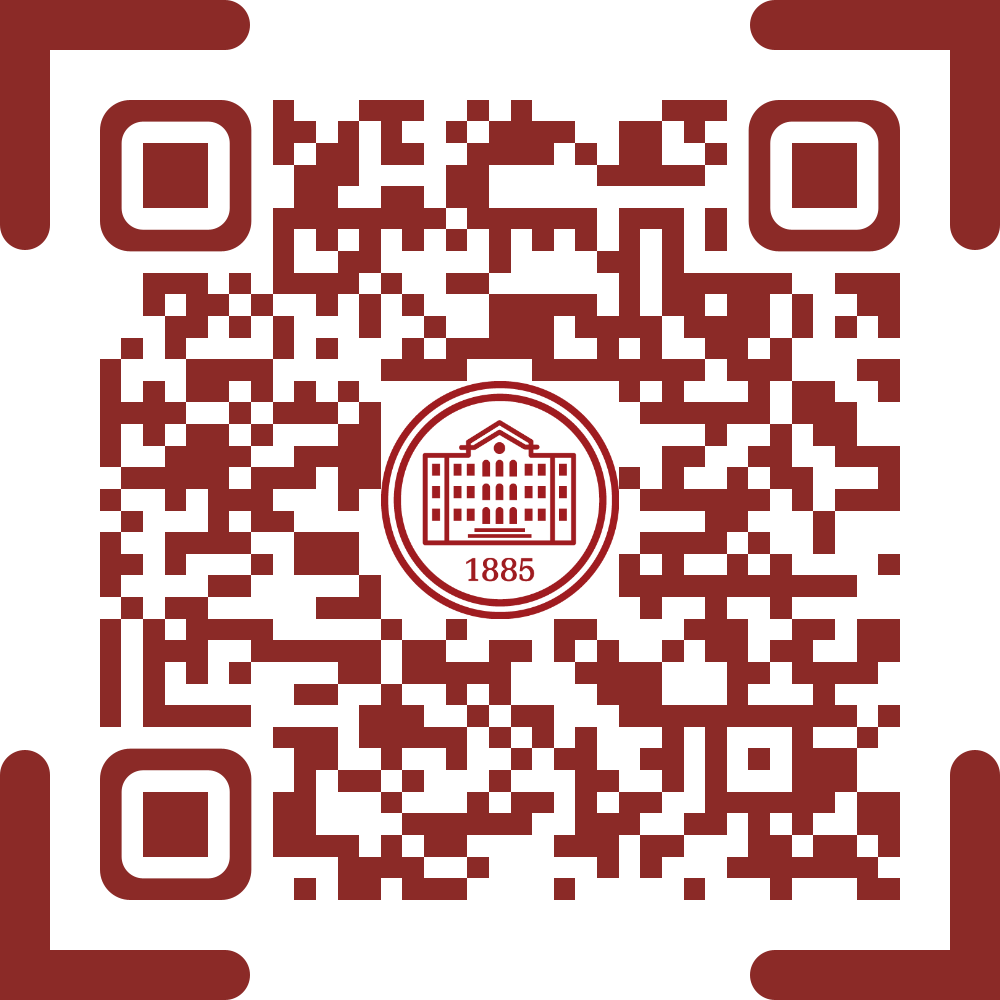

0 з 10 дітей
уже задумувались над тим, якою професією хочуть займатися в майбутньому.
Обирай свій шлях!
Два безкоштовні вебсервіси НТУ «ХПІ» за кілька хвилин показують, до якого з чотирьох освітніх напрямів у тебе найбільша схильність, і ведуть одразу на сторінку вступу.


Виклик
Профорієнтація в школах має епізодичний характер і здебільшого обмежується старшими класами. Через це зростає ризик неусвідомленого вибору, втрати мотивації до навчання та неефективного використання людського потенціалу.
0 з 10 дітей
уже задумувались над тим, якою професією хочуть займатися в майбутньому.
лише 0 з 10
чітко визначилися з цим питанням.
0%
підлітків в Україні можуть назвати професію, яку очікують мати у 30 років. Це вдвічі менше за середній показник країн ОЕСР.
Джерело: Фундація Олени Зеленської (2025). Індекс майбутнього: професійні очікування та розвиток підлітків в Україні.
Відповідь НТУ «ХПІ»
Фахівці університету з профорієнтації, психології та інформаційних технологій створили чат-бот і тест, у яких внесок кожної відповіді в освітні напрями визначено за експертними оцінками великої мовної моделі.
Діалог
Ти відповідаєш на 11 запитань, обираючи один із чотирьох готових варіантів, а бот коментує кожну відповідь. Коментарі допомагають зрозуміти, які саме інтереси стоять за твоїм вибором.
Візуальне сприйняття
25 тверджень у випадковому порядку, кожне з ілюстрацією, створеною ШІ. Швидка відповідь «Так» чи «Ні» фіксує емоційну реакцію на професійне середовище.
Аналіз українського й зарубіжного досвіду показав, що подібні інструменти переважно орієнтовані на студентів, а не на абітурієнтів. Сервіси НТУ «ХПІ» не замінюють консультацію з приймальною комісією, а доповнюють її. Вони особливо корисні вступникам із ТОТ і тим, хто не може відвідати університет особисто.
Відеопрезентація

Відео завантажиться з YouTube після натисканняМетодика

Тест вимірює професійні інтереси, а не здібності. Твердження охоплюють п'ять сфер, на кожну припадає від 4 до 6 тверджень трьох видів: бажана справа, захоплення, риса характеру.
Відповідь «Ні» означає лише, що інтерес не виявлено. Вона не свідчить, що напрям не підходить.
Самооцінка та рефлексія. Кожна відповідь у чат-боті супроводжується коментарем, який спонукає подумати про власні інтереси.
Порівняльно-аналітичний метод. Результати зіставляються з освітніми напрямами за принципом інформаційної адекватності: «Я-образ» учня порівнюється з вимогами професії.
На етапі розроблення GPT-4o-mini ранжує кожен варіант відповіді за відповідністю чотирьом напрямам: ранги від 1 до 4.
Фінальний ранг дорівнює середньому геометричному оцінок K незалежних запитів. Некоректні відповіді моделі запитуються повторно.
Ранги обраних відповідей підсумовуються, схильність до кожного напряму нормується за власною шкалою 0–100 %. Однакові відповіді завжди дають однаковий результат.
Напрями впорядковуються за схильністю й подаються з посиланнями на сторінки вступу. Тест додатково пояснює вибір через інтереси з відповідей «Так».
Sd — сума рангів обраних відповідей для напряму d, межі шкали рахуються з усіх запитань. Кожен напрям має власну шкалу, тому сума відсотків не дорівнює 100 %.
Куди ведуть рекомендації
Результат кожного сервісу містить посилання на сторінки вступу. Вони виконують роль другого етапу: там можна уточнити спеціальності в межах напряму.
Техніка, механізми, енергетика, конструювання.
Сторінка вступу → CПрограмування, алгоритми, дані, кібербезпека.
Сторінка вступу → BАналітика, управлінські рішення, економіка, підприємництво.
Сторінка вступу → DРобота з людьми, суспільні процеси, комунікації, мови.
Сторінка вступу →Для шкіл, університетів і партнерів
Масштабоване автоматизоване рішення для зростаючого попиту на освітній консалтинг і профорієнтацію. Зменшує навантаження на консультантів і витрати приймальних комісій, інтегрується в освітні платформи та державні служби зайнятості. Модель монетизації: підписка, ліцензування для шкіл і університетів, B2B-послуги для освітніх платформ.
Гейміфікований формат підвищує залученість учнів. Нульова вартість інфраструктури, робота без сервера й відсутність збору даних роблять тест зручним для державно-приватних партнерств, ліцензування та брендованого розгортання в школах і на ярмарках вакансій.
Перші результати впровадження
Протягом 2025–2026 років сервіси представлено учням шкіл під час профорієнтаційних зустрічей і освітніх заходів.
Переходь за посиланням або скануй QR-код

11 запитань, коментар до кожної відповіді, відсотки за чотирма напрямами.
khpi-career-advisor.github.io/bot Відкрити чат-бот →
25 тверджень з ілюстраціями, два рекомендовані напрями з поясненням.
khpi-career-advisor.github.io/quiz Пройти тест →Команда
Завідувачка кафедри педагогіки та психології управління соціальними системами
Завідувач кафедри програмної інженерії та інтелектуальних технологій управління
Відповідальний секретар Центральної приймальної комісії (2025)
Студентка спеціальності «Інженерія програмного забезпечення»
Студент спеціальності «Інженерія програмного забезпечення»
Студент спеціальності «Психологія»
Студентка спеціальності «Психологія»